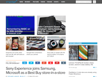
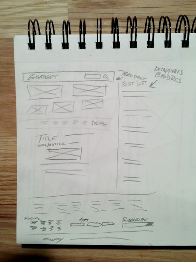

Site Review - Engadget
I enjoy the relevant tech articles on Engadget.com. I can almost always find something worth reading. They do an excellent job of covering a wide range of tech stories while balancing between not being too technical nor too topical. I feel if I only read this blog, I would still have a good grasp of current and upcoming consumer tech.
The site starts with 5 images, each for a different major story. These stories revolve slower than the chronological blog postings below. These images draw the eye to their best reads and save the user from searching. The linear posting method with the highlights at the top makes it an easy site to use. Though I have rarely used it, a thin persistant bar at the top contains a search box.
Engadget is a modern, sleek design with a lot of white space. Calm blue is able to draw attention to needed elements when contrasted against the white and greys of the rest of the design.
Engadget is an ad supported site. They have a relatively low number of ads.